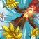

恢复德 PvP 判断训练器
等血条动了你才铺，你已经晚了一整个循环。
恢复德的治疗几乎全是持续效果——
精通「和谐」按目标身上你的持续治疗数量提高治疗量。实测属性优先级是 精通 100 > 全能 83 > 急速 43 > 爆击 1——属性面板本身在告诉你：把持续治疗铺厚，比治得快更值钱。
反过来说，这也是恢复德最容易输的地方：一个身上什么都没有的人突然被集火，你手上没有能立刻把他拉回来的东西。
该不该开？勾一下就知道
勾掉几条，就有多少胜算。
三个时钟
恢复德的判断挂在这三个数字上。
把全队的持续治疗铺满很贵。恢复德打不完的局，通常不是治不动，是没法力了。
它没有免疫，也没有大减伤。能用的是
所以「被贴脸」对恢复德是资源问题不是血量问题——跑掉一次就等于赚了一个循环的治疗时间。跑不掉的时候，你要提前知道自己撑不撑得住。

大牌时钟 · 三张都要「场上已经有货」空场开等于浪费▸三张牌的共同前提都是「场上已经铺好了东西」。队友裸血的时候交大牌，是把最贵的资源用在最差的时机上。
本版定盘（top50 三对三实测）
Keeper Of The Grove 44/50，Wildstalker 6/50。不是唯一解，但差距足够大——除非你很清楚自己为什么要走另一条。
这条线围绕
换句话说：这条线把「按时放
三格 PvP 天赋各 49/50，其余 8 个加起来只有 3 人次。这在本站已上线的专精里是独一份——别的专精至少有一格要看阵容，恢复德三格全部定死。
Call of Ohn'ahra：
Forest Guardian：伤害与连击类技能会延长你身上生效的持续治疗，消耗类技能则加快它们的跳动。又是一条奖励「提前铺」的线。
Early Spring：
注意：英雄天赋里另有一个同名的 Early Spring（缩短